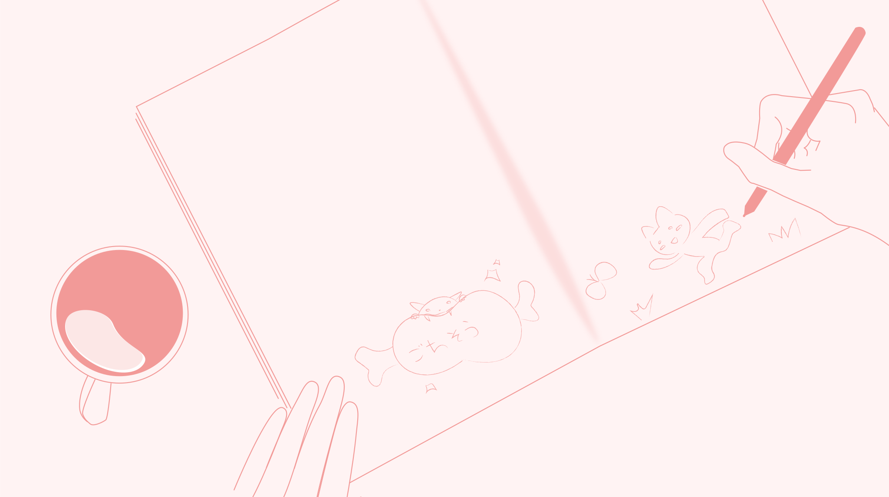
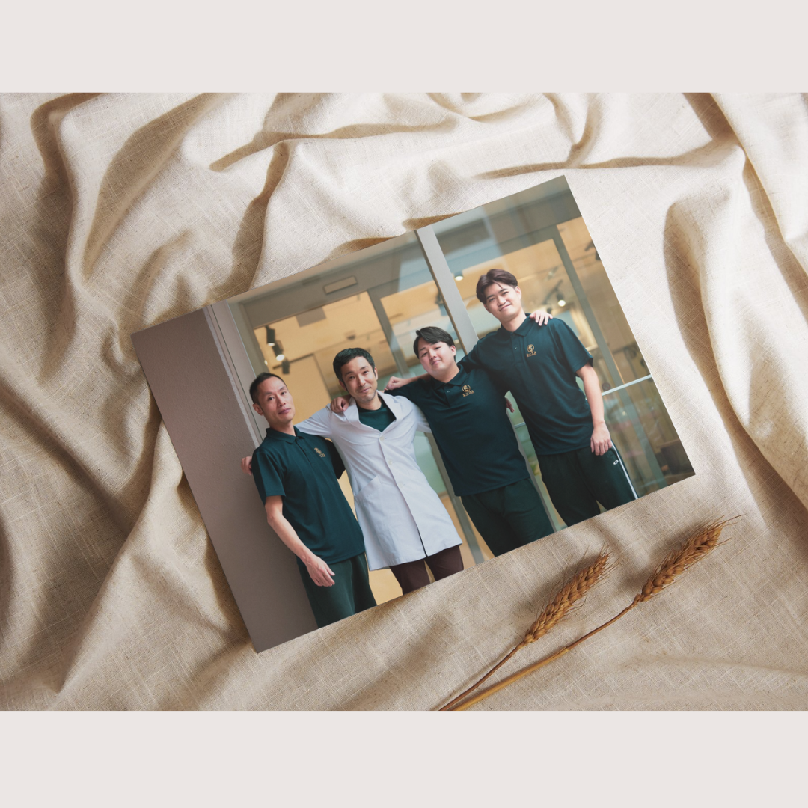
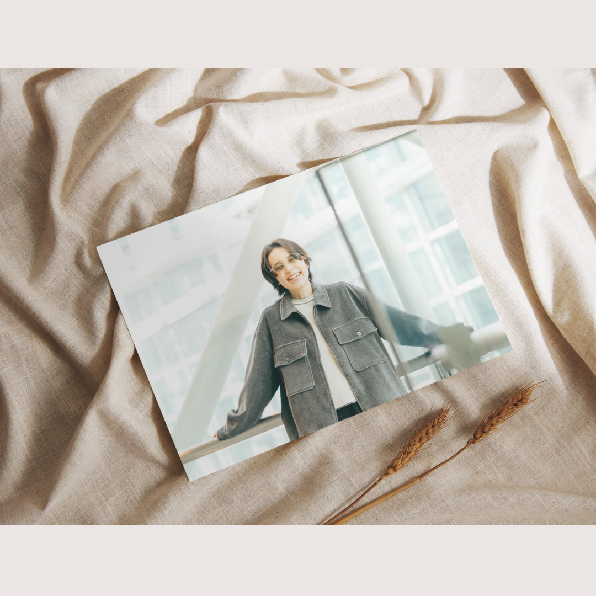
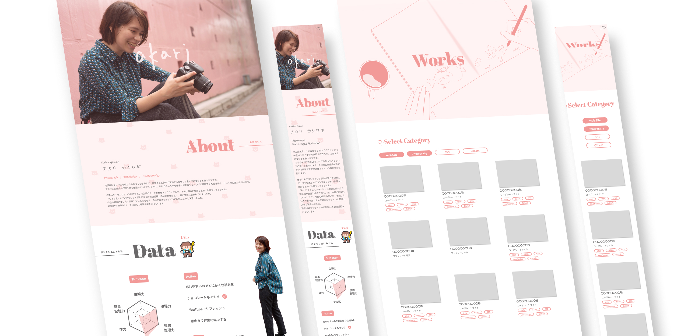
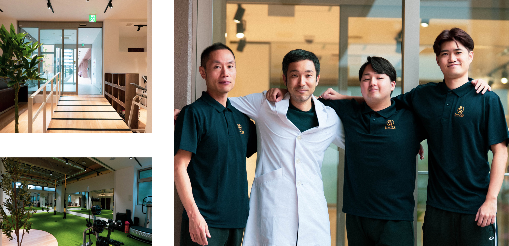
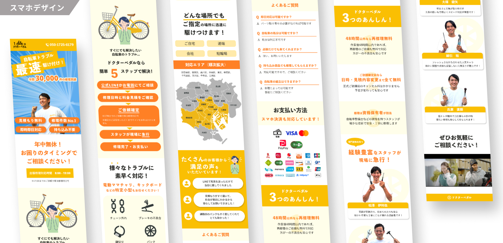

ポートフォリオサイト

広告・WEB掲載用宣材写真

プロフィール写真
お仕事のご依頼・相談はこちら

私自身のポートフォリオサイトです。
制作年 2026
アップロード構成 GitHub Pages + 外部フォームサービス（Formspree）
担当領域(期間) 企画（1w）、情報設計(1w)、WF(1w)、デザイン(2w)、コーディング(3w)
利用ツール figma、Illustrator、Photoshop、VSCode
コーディング言語 HTML、CSS、JavaScript
撮影機材 SONY α7S III / FE 70-200mm F2.8 GM

Web・広告掲載用写真
ホームページやチラシでの利用を目的とした店舗撮影をさせていただきました。 今風なクールで清潔感たっぷりの施設の良さを感じてもらいつつも、病院提携ジムならではの信頼感や親しみやすさが伝わるようにトレーナーさん達の表情がよく見えるように撮影しました。
撮影年 2024
撮影データ形式 RAW
担当領域(時間) 撮影（1.5h）、編集(1.5h)
撮影機材 SONY α7S III / FE 70-200mm F2.8 GM / E 11mm F1.8

WEBクリエイターおのくんの商用プロフィール写真を撮影させていただきました。
撮影年 2026
担当領域(時間) 撮影（15min）、編集(1.5h)